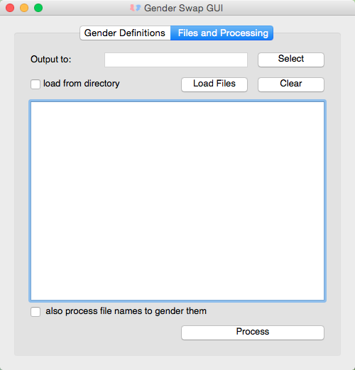

Download pre-built versions (version 0.5):
MacOSX Version
Windows Version
The prebuilt versions don't require you to install any other software, but they only offer the GUI interface. You can see an example of the gender-list formatting here.
The source for this program is available on Github if you wish to modify it or run it on the command line.
An HTML version of the README file documentation is appended below for reference.
gender_swap
A tool for swapping genders in LARP materials using simple markup syntax.
The gender_swap utility is a tool for setting gendered text in multiple files so that it remains consistent. It was created to allow writers of Live Action RolePlaying Games (LARPs) to change the genders of multiple characters based on who is cast in those roles.
There are currently two ways to use the utility: it can be run purely via the command line or it includes a GUI interface. In order to use the GUI you will need to install PyQt4. The pure command line version should run fine whether or not you have PyQt4 on your system.
There is also a packaged version of this application available in the repository's "pre-built" directory for Windows and MacOS. The packaged version only offers the GUI interface, but does not require any supporting installations (Python, PyQt4, etc. are all included).
The utility can currently re-gender txt and rtf files. It's not particularly smart about how it handles rtf documents, so there are some known bugs in how formatting spanning the gender markup can be broken up during processing.
As of version 0.5 the gender_swap utility can handle two neutral gender options (they and ze) as well as traditional male and female pronouns. The format of the gender-list file has changed slightly to support this feature.
Setting Up Your Files
In order to specify text for the various genders in your files, you'll need to use some very simple markup language. First you must create a gender-list text file that records the genders the characters will be gendered to. The genders set in this file will change as you use it for different runs of a game.
The project comes with an example gender-list. Your gender-list file can be named whatever you want but it must be a .txt file. For each character whose gender can change, you must assign them a unique character number and have a line in your gender-list in the form:
Character Name: Number: possible genders for this character separated by /'s: Female or Male or They or ZeThe number must be an integer. An example line might look like:
Joe: 02: female/male/neutral they: MaleThe possible gender options should be in the order you intend to list the gendered text for Joe in your character sheets.
In any documents that mention Joe you will need to identify text that depends on Joe's gender. For example:
Joe was an enterprising young man.For each instance of gendered text, add markup with the options for alternate gendered versions of the character. Because Joe is defined as having the options "female/male/neutral they" This would look like:
[Character Number: Female Text / Male Text / Neutral They Text]In our example the sentence might become:
Joe was an enterprising young [02: woman/man/person].You can replace larger pieces of text spanning multiple lines or even paragraphs with a single expression. If you're using rtf, the markup can't span half of formatting like bold, but it is ok to bold a larger section of text includes an expression (in that case the rtf formatting tags will be outside the expression and won't get mangled by the utility when the expression is processed).
The utility also offers the option to gender the file names themselves. This is especially handy for character sheets where the character's name changes with their gender. For Joe's sheet the syntax would be:
character number.female text.male text.other gender text.whatever text you like.rtf or txtSo Joe's sheet's file name might look like:
02.Josephine.Joe.J.Hunter_sheet.txtWhen processed with Joe set to Male in the gender list, it would become:
02.Joe.Hunter_sheet.txtRunning from the Command Line
The command line version of the utility takes the path to the gender-list, the input directory where the files you want to gender are, and the output directory where you want your freshly gendered files. The command is in the format:
python -m gender_swap swap -g genderList_201310run.txt -i ./character_sheets -o ./201310genderedSheetsThe command line has help (-h) to describe the various options in more detail.
Running the GUI
If you are using a packaged version of the utility, you can start the GUI interface by runing the .app or .exe file.
If you are using the command line the following call will start the GUI:
python -m gender_swap gui
Click on the "Load Gender List" button in the "Gender Definitions" tab and select your gender-list file. The program will load the file into the table below the button.
Next select the Files and Processing tab.

Click the "Select" button and choose the output directory you want to use. The output directory path should appear to the left of the button. If all your character sheets are in one directory, check the "load from directory" check box. Click the "Load Files" button and select either the directory with your character sheets or the individual sheets.
The paths to the character sheets will be loaded into the table below. If you wish to remove a file from this list you can either select it and hit the delete key. If you want to remove all the files click the "Clear" button.
If your character sheet names are formatted to be gendered, check the "also process file names to gender them" check box. Then click the Process button. For medium length sheets (about 3 to 4 pages of text) it takes the application about a half second per sheet, so wait a few seconds.
Your output directory should now contain the gendered files.
License
This program is free software: you can redistribute it and/or modify it under the terms of the GNU General Public License as published by the Free Software Foundation, either version 3 of the License, or (at your option) any later version.
This program is distributed in the hope that it will be useful, but WITHOUT ANY WARRANTY; without even the implied warranty of MERCHANTABILITY or FITNESS FOR A PARTICULAR PURPOSE. See the GNU General Public License for more details.
You should have received a copy of the GNU General Public License along with this program. If not, see http://www.gnu.org/licenses/.